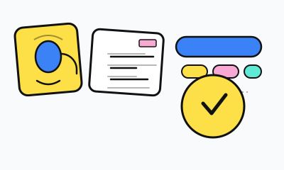
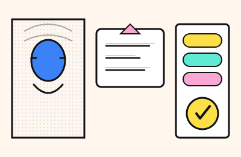

話すだけ。整理はおまかせ
日本語でも英語でも、思いついたまま話せます。
コマンド暗記は不要。流れがそのままタスクに並びます。
デザインモック — 参考: nani.now/ja · 従来の lp1 （カルーセル）は poplist.pages.dev · ベントー・太線格子・ポスター帯・最下部にイラストの作風マトリクス。
あそびのあるミニマリスト
Poplistはリストの「しんどいところ」を減らします。話す・貼る・自動整理・やさしい期限・色・エクスポート。同じプロダクトを、もう少し“近い”見た目で試すモックです。
上のベントーは非対称格子＋各タイトル2行。丸いフラットクレイ気泡に、控えめなツヤ反射（派手な3Dではない）。下段は太線・ポスター・作風マトリクス。
日本語でも英語でも、思いついたまま話せます。
コマンド暗記は不要。流れがそのままタスクに並びます。
仕事・家・自分などに自動分類。今日・今週・そのうち。
頭の棚卸しを減らして、やることに集中。
完了は軽いポップで気持ちよく。
覚えるエネルギーは、本当にやりたいことへ。
長文も議事録も文字起こしも、一度貼るだけ。
Poplistが抜き出して、きれいに並べます。
バージョンB — 太線ポップ
上のベントーと同じ見せ方 — 話す・貼る・自動分類・タップ完了。編集デザインのポップ寄り：ハーフトーン、黒の輪郭、アクセントはテーマのトークンから（別色のブルー固定ではありません）。
話すだけ。整理はおまかせ
思いつきがタスクに。マイクと波はアクセント色に追従します。
ぐちゃっと貼って、すっきり
長文を貼ると行に。スタンプはアクセント色。
仕事・家・自分
自動バケツ＋今日・今週・そのうち。太いレールで一目で。
タップで完了。頭もすっきり
一度のポップで完了。放射線は編集っぽい勢いで、擬物ではなく。
バージョンC — ステッカー気分
画はプロダクトの流れが主役：話す→貼る→分ける→完了。ステッカーは外装で、テクスチャ遊びではありません。
色はPoplistのまま、黒インクで締める。構図はコラージュ寄りで、グッズやSNSカバーに近いノリです。
感情のフックを先に置きたいとき向き。実画面のスクショは、信頼が乗ってからでも十分、という比較用。

バージョンD — 雑誌の切り抜き
パネルごとに同じ機能の流れ：ハーフトーンのマイク、貼り付け、整列カラム、チェック。レイアウトは物語のため。
キャンペーン用ポスターの勢い。LPのヒーローアートやプレス資料向きで、機能説明の代わりにはしない比較。
バージョンBと同じくコントラストと線は太め。ただしカード4枚ではなく1枚画なので、ページのリズムはやや静か。

バージョンE — ナイトポップ（ブランドは維持）
ナイトでも流れは同じ：光る音声、行に落ちる貼り付け、バケツの帯、完了のポップ。
イラストのみで「一日の後に落ち着いたリスト」を連想。昼の明るいベントーと並べる補助線で、置き換えではない比較。
あとでSVGを写真に差し替えても、コピーと画のバランスがモバイルで崩れないように組んであります。
イラストの方向性
各タイルは同じ物語のミニ版です：音声入力→ぐちゃっと貼る→バケツ分け→タップ完了。サイト全体のヒーローに一本化する lane を選び、説得力が要る所は実UIと混ぜてください。
狙い：コーポレートの人物ストックでも、空っぽの超フラットでもない。少し3Dや動きの気配。色はPoplistのトークン（青軸＋黄・ミント・ピンク＋黒インク）で統一。
丸い立体とやわらかいハイライト。マイク・メモ・チップが「触れそうなモノ」に見え、UIの枠に見えにくい。
向き：マーケのヒーロー／オンボ。避けたい：ギラギラしたおもちゃ広告。光は抑えめに。
「山に分ける」玩具ブロックの比喩。ダッシュボードの格子には寄せない。
向き：説明図・機能比較。避けたい：細いワイヤのアイソメ（古いSaaS感）。
アニメセル的な陰1段＋マイク周りのスピード線。「止め画」の気配。
向き：ループ動画・SNS。避けたい：キャラ本体まで描く。小道具は抽象のまま。
フラット色の上に半透明の塊。流行のガラスUIのコピーにはならない程度に。
向き：ダークモードの画・鋭いスクショとの対比。避けたい：偽OSウィンドウ。
紙が積われる＝貼ってから並べ替え。ストップモーションの手触り。
向き：編集ページ・更新ログ見出し。避けたい：破れ目を全面に。
同じ形にシアン／マゼンタがズレる。印刷の温かみで、話はプロダクトのまま。
向き：ブログ・ジーン的キャンペーン。避けたい：ノイズでタスクが誤植に見える。
黒のルール＋はっきりした塗り。B帯の勢いと揃えつつ、機能説明は残す。
向き：攻めのLP・ローンチ。避けたい：同じ画面でアプリ内UIの繊細さと喧嘩。
人物の代わりに面の塊。「パチッとはまる」感じで分類と完了を表す。
向き：3D寄りモーションの試し。避けたい：ゲームのガチャ箱ネタ。
Y2K寄りの光はモノだけに。ハイライトが動いてるような連想。
向き：立体感が欲しい静止ヒーロー。避けたい：液体金属の背景全面。
アイコンにスキューとスピード線。静止画でも「動いてる」読み。
向き：小キャンペーン・モーションへの引き継ぎ。避けたい：歪みすぎて意味が消える。
社内・デザイン比較用モックです。最終コピーではありません。